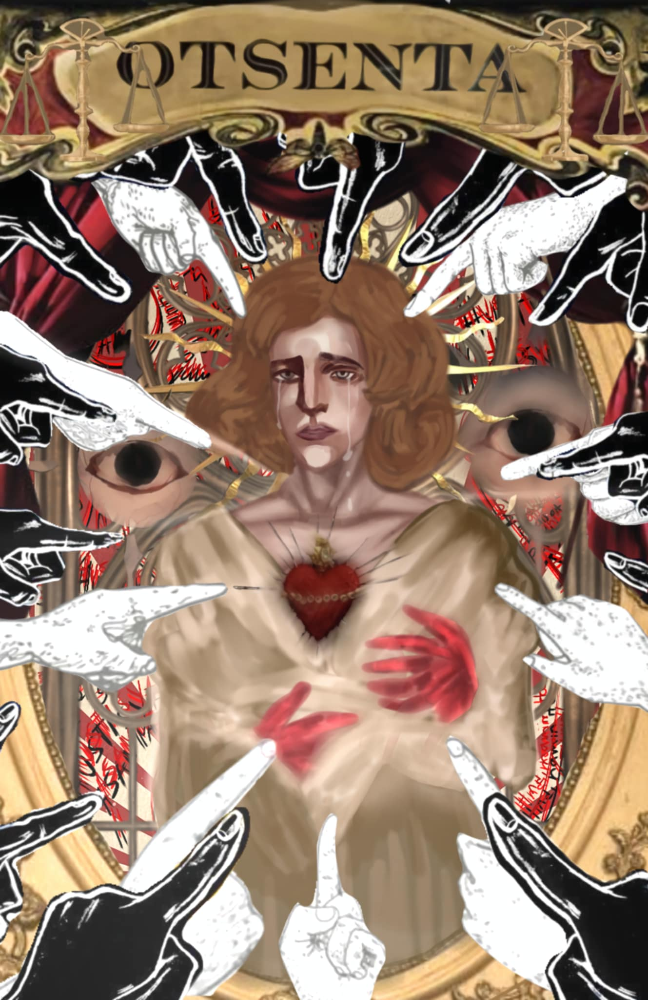

BATHAN, Mikesha
- Paliwanag:
Ang aking natutunan na aral sa dokumentaryong aking napanood ay, ang karanasan ng mga mamayan sa kamay ng mga sundalong hapon at ang mga istorya ng ilan sa mga mamayang pilipino na nakaranas ng kalupitan ng mga sundalong hapon na hindi biro at hindi dapat ito isantabi. Sa dokumentaryong ito itinala at inalahad ang mga ginawa na pagmamalupit ng mga sundalong hapon noong mga panahon na iyon, na napaka lungkot man na isipin ang mga nangyayari ngunit Ito'y kailangan nating tanggapin dahil Ito'y ngayon na parte ng historya ng ating bansa. Sa kabila nito ay, umuusbong at nagpapatuloy toyong mga mamamayan sa ating pang araw-araw na Buhay upang mas mapaunlad ang ekonomiya ng ating bansang sinilangan.
Ito'y maaaring sa tingin ng nakararami na hindi naman mabigat, ngunit dahil sila ang nakaranas ng kalupitan at sila ay ang nakikipagsasapalaran at nakipaglaban ng mga panahon na iyon Wala na tayong ibang masasabi ngunit magpasalamat sa sakripisyo na ginawa nila para sa kapakanan ng ating bansang sinilangan. Kaya sa pamamagitan ng pagkinig at pagpanood ng mga dokumentaryontulad nito ay Hindi lang Isa o dalawa ang aral na makukuha natin kundi sandamakmak na aral na maari nating Gawin sa reyalidad ng ating Buhay na kasalukuyan nating hinaharap. Reyalidad na Puno ng responsibilidad, hamon, at mga balakid na tanging Tayo lang din ang makaka diskubre ng iba't ibang uri ng paraan sa pamamagitan ng pagsusumikapnat pagiging determinado sa ating sarili at sa ating ninanais makamit.
Ang nagtanggol sa pilipinas noong panahon na iyon ay ang hukbalahap noong 1940 hanggang 1950 laban sa mga sundalong hapon. Sila ay ang naging linya ng depensa ng ating bansa laban sa mga hapon dahil napaalis ng mga hapon ang huling linya ng pwersa ng mga amerikano. Hindi biro ang mga pangyayari na nangyari noong mga panahon na iyon sapangkat ay ito ay nakakaalarma dahil maraming mga kababayan nating pilipino ang namatay noong panahong nakikipaglaban ang hukbalahap laban sa mga sundalong hapon. Batay sa dokumentaryong aking napanood may mga malaya lola na ininterview upang malaman ang kanilang istorya tungkol sa panahon ng mga hapon na kanilang hinarap at pinagdaanan noon, sila'y naghahangad ng hustisya at Wala nang iba, sila ay ang mga "malaya lola".
Ang mga "malaya lola" ay ang mga babaeng pilipino na nakaligtas noong pananakop ng mga sundalong hapon sa bayan ng paniki. Sila'y nakaranas ng mga karumal-dumal na krimen o mga "war crime" na ginawa ng mga hapon noong panahon na iyon, kaya hindi dapat natin ito ipagsawalang bahala at dapat natin din marinig ang kanilang karanasan upang matuto ng mga aral na tiyak na ating magagamit sa pagdating ng nararapat na pagkakataon. Pag dumating ang pagkakataon na ito ay siguradong ating magagamit ang mga aral na ito upang makagawa ng isang aksyon o Paksa at upang Gamitin ang kaalaman upang magamit ito sa nararapat na pagkakataon upang makabuo ng mabuting pasya.
Batay sa storyang sinabi ng isa sa mga malaya lola, noong siya ay siyam na taong gulang pa lamang siya, ang kanyang ina, at ang kayang itay ay namumuhay ng payapa ng biglang nakarinig sila ng mga putukan at mga bomba na sumabok Malapit sakanila na lubos na nakaka alarma. Matapos noon sumunod na din ang pagdating ang mga sundalong hapon at nagmartsa na ang mga sundalong hapon sa kanilang bayan, ang bayan ng paniki. Bago magmartsa ang mga sundalong hapon sa kanilang bayan at sila ay nandakip ng mga sibilyan na natira at ginapos nilansila ng halintulad sa isang kalabaw at dinala sa tapat ng paaralan. Sinabi din ng lola na ang isa sa mga tao sa kanilang bayan ay pinututol ang ari at ito'y kinagat, dahil ayun daw ang nakakaalam sa kung saan ang kuta ng mga hukbalahap na siyang nag-aaklas sa mga sundalong hapon.
Aking din natutunan ang mga Karumaldumal na sinapit ng Isa sa mga malaya lola at ang kanyang ina dahil siya at iba pang mga nabihag na babae ay ginahasa ng mga sundalong hapon kaya gabi-gabi ay tilay sila ay umiiyak at kinakabahan kapag lumalapit ang mga sundalong hapon sa kanila. Dahil sa traumatikong sinapit nila noong mga panahong iyon sila ay naghahanap ng hustisya dahil ang kanilang sinapit ay kagagawan ng mga sundalong hapon na nagmalupit sakanila na ginawa silang mga binabae na pang alis lamang at pampalipas ng oras. Hinding Hindi sila mapapatawad ng kanilang mga biniktiba dahil ang gawa ay tapos na at hindi na mababawi walang Paumanhin na tatalan dahil Ito'y nakaukit na salanilang isipan.
Isa pa sa mga walang awang kanilang ginawa, ay ang karumal-duman na karahasan at walang awang pagpaslang sa maraming tao na siyang mga naging biktima noong panahon na iyon ng sinakop ng mga hapon ang maynila. Noong 1950 ng natalo ng hukbalahap ang mga pwersa ng mga sundalong hapon na nasa maynila kaya naging malaya ang maynila. Subalit ang maynila ay tinayang ikalawa sa pinaka napinsala sa buong mundo noong panahon ng Gera. Ang mga imprastraktura at gusali noong panahon iyon ay naging sira sira punong Puno ng mga ala ala na Kay sakit alalahanin na tumatak sa historya ng ating bansa.
Matagal ang naging palugid upang mabuo muli ang maynila na ngayon ay kapital ng mga maraming mga trabaho Marami ang mga naging biktima na naghahanap ng hustisya. kaya noong 2022 pumunta sila sa japan upang imit ang gobyerno doon upang makakamit ng hustisya. Ngunit hanggang ngayon na hindi pa rin sila nabibigyan ng hustisya noon ay sila ay 100 ay 80 na lang sila dahil marami na din ang mga pumanaw dahil sa matandang edad at di na kinaya ang bugso ng Buhay. Kaya unti unti nadin Silang napapagod at nawawalan ng pag-asa.
Sakabila ng lahat, ng ito akong napagtanto ang lahat ng ito din ay nangyayari ng may dahilan. At Ang tiyak na pagliko ng mga kaganapan ay may napakalaking epekto sa ating lipunan ngayon. Ito'y tilang nagsilbi nilang daan upang Tayo'y mas maging handa sa mga hamon at sirkumstansya na ating haharapin.
Sa aking palagay sumasalamin sa pagbabago at ang determinasyon ng sambayang pilipino ang naging resulta ng mga pangyayari. Kung Hindi ila naghimagsik laban sa mga hapon siguro ay ngayon di natin matatamasa ang kalayaan natin at di Tayo makakagawa ng walang kalayaan. Kaya, lubos akong nagpapasalamat sa mga sakripisyo na kanilang ginawa.
- Repleksyon:
Bilang isang mag-aaral, noong aking napanood ang dokumentaryong aking napili ang aking sariling replekson sa dokumentaryong aking binasa ay, kinakailangan nating maging malakas kahit ano paman ang mga balakid na ating haharapin. Kinakailangan natin ito upang maiusad natin ang sarili upang makamit nating ang ating inaasam na kalayan. Minsan kinakailangan nating lumabas sa ating nakasanayan at ipagtanggol ang ating sarili o ang ating kalayaan upang makamit natin ang ating inaasam para makamit ang pagbabago, sa pamamagitan nito mas ating makakaya ang hagupit ng agos ng Buhay dahil dito mas Tayo'y nahahasa at ating kakayanin kahit anomang oras ito na ating maaaring harapin.Kahit Tayo'y humaharap sa isang sitwasyon na Tayo'y lubos na nagagapi sa isang sitwasyon na tayo'y naiipit at naghihirap mayroon paring pag-asa upang makamit ang matamis na tagumpay sa dulo ng paghihirap at sakripisyo na ating ginawa upang makarating sa ninanais mong makamit na destinasyon.
Aking napagtanto ito dahil sa mga malaya lola's dahil kahit karumal-dumal at napakahirap ng kanilang pinagdaraanan ay kanilang nagawa parin itong lagpasan at makamit nila ang ninanais nilang kalayaan. Sa pamamagitan ng di pagsukonat labis na eeterminasyon ay nagsiklab ito ng pag-asa sa mga mamamayang pilipino noong panahon na iyon laban sa mga sundalong hapon. Ako'y labis na nagpapasalamat sa dugo, hirap, at pagod na ginawa ng mga pilipino noong panahon na iyon. Ako'y lubos na sumasaludo, humahanga, at rumerespeto sakanila dahil sa kanila Tayo'y namumuhay ng payapa at Tayo'y umuusad o nagiging progresibong bansa na Hindi sumasailalim sa bandang hapon na nagmalupit noong mga panahon na iyon. Kung Hindi dahil sakanila maaaring ako ngayon ay Hindi nabubuhay kaya kung sila ay aking makakausap ay ibibigay ko ang taos pusong pasasalamat at saludo ko sakanila.